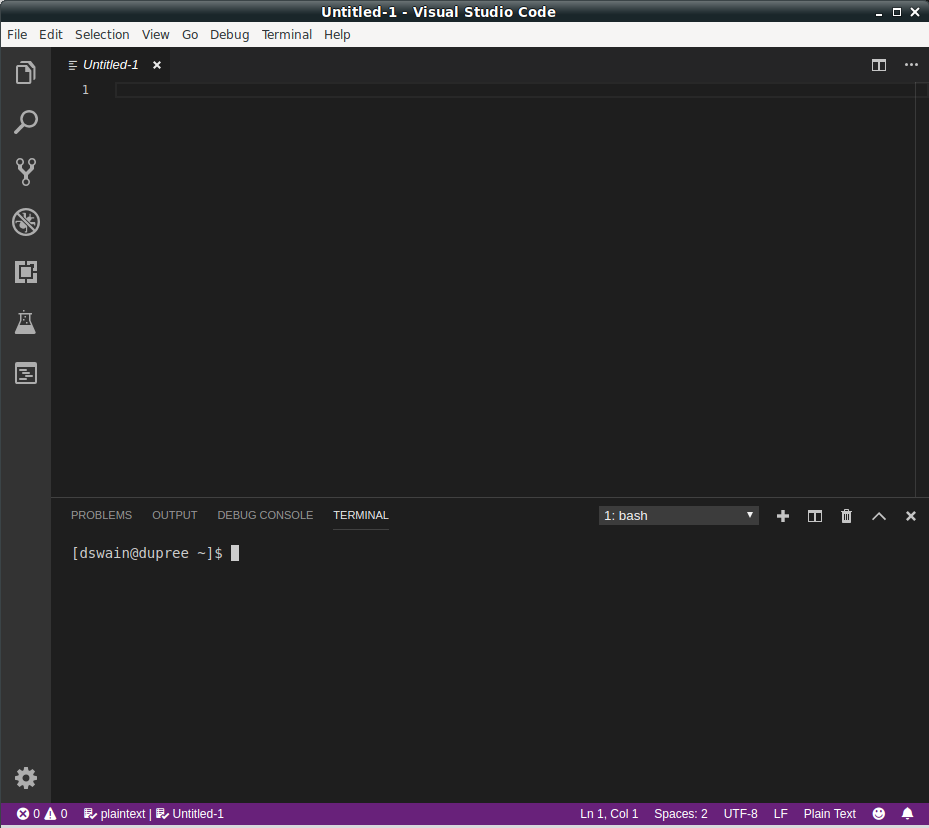

A Time I Had A Burn Out
Around October or November of 2017. I walked upstairs in my previous apartment, sat down at the desk I'm at now, and thought to myself:
Alright, time to write some code. This should be fun!
With a faint idea of something to work on, I popped open Visual Studio Code, and then sat here for a while:

After a few minutes of staring at my screen, I realized that I had zero desire to do anything like this at that moment. This was odd because just moments ago I was ready-to-go. I also sometimes enjoy projects on the side and noodling around. So what was this moment I was having?
The two prior years of my work life had been both exciting and absolutely exhausting. Passing over most of the specifics, the sequence of events was like so.
Around June 2015, I started on a new team at the company I worked for then. The team's proposition was neat for a large company. We were given some latitude to take some chances, and see what kinds of product innovations we could make. This was both mentally stimulating for the new challenges. It was sometimes emotionally draining for dealing with the new environment and interactions with people. Even still, I considered almost every I worked with great (and I still keep in touch with many of them to this day). So while taxing at times, I had a really great experience here.
Around June 2016, I agreed to join another adjacent team. The goal here was to help get another aspect of our product updated. The concepts latitude and attitude were similar to the last team. And like the last team, I loved the work and individuals on my team, to the point of it being a significant part of my identity. I still keep in touch with many people here too, and have a lot of fond memories here too. But the experience was also vastly different from the last team for a bunch of reasons (mainly an entirely different level of corporation politics came into play). So while the experience was good, the majority of the events of this time were extremely taxing for me. I did not manage the stress and factors outside of the actual development work itself well, at all.
Around August 2017, for reasons, the team was dissolved. At my limit with the past year, and having a new opportunity drop into my lap, I ended up moving onto a new group. This also included moving to a new town to make life simpler. After a busy couple months of moving, settling in, and getting into a new position, this night seemed like I finally had a moment to sit down and get going! But here I was, staring at that VSC window, not budging.
Is this what writers block feels like?
At the time, I really wasn't sure what this was. All I knew was that it was beyond not having any ideas of apps to build (that's pretty normal for me). This was having no desire to be programming at all. I was totally done. No more. An image someone had shared with me many years ago finally felt so real:

So instead, I bought my first games in many years (Diablo III - I'm behind the times) and proceeded to play that for some months instead. It was a fantastic break, and being able to allow yourself to relax instead of keeping pushing is incredibly liberating. If you feel like you need this, let yourself have it.
In hindsight, it seems at least somewhat more clear to me why I might've felt this way:
- Personal identity tied up into the work where much of was outside my control.
- Not coping with the stress entailed in that work well.
- A constant emotional grind.
- Having what I had tied myself up with taken away felt personal.
When you add it up, this sounds like burn out. I believe it was.
Thankfully my bout of it was short lived. I've felt pretty much normal since then. I've worked on figuring out what work/life balance means to me (beyond working normal hours). I'm not perfect at it, but I think I stand a better chance at avoiding burn out, or at least detecting it.